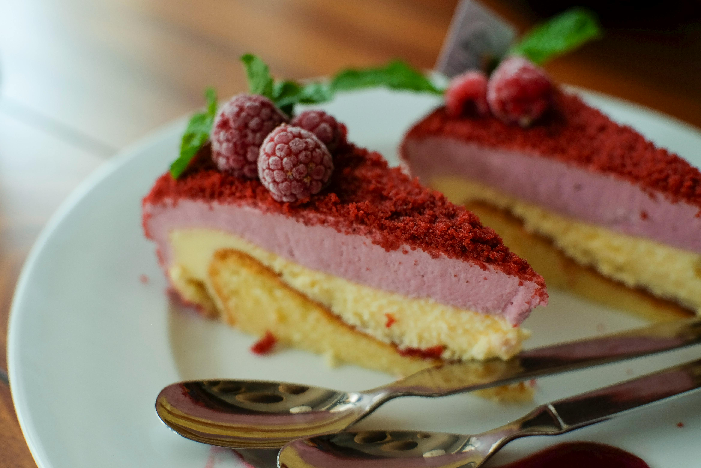
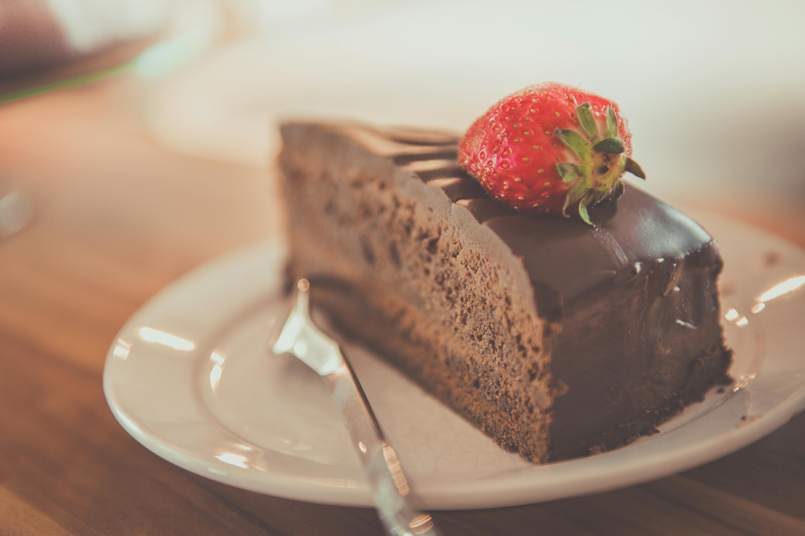

Os cursos de cupcake oferecem uma variedade de técnicas e receitas para criar deliciosos e personalizados cupcakes. Os alunos aprendem a preparar massas, coberturas, recheios e decorações, além de técnicas de confeitaria criativa e armazenamento. Os certificados de conclusão são valorizados no mercado e podem ser impressos ou enviados para casa. Os cursos são totalmente online, permitindo que os alunos aprendam a qualquer hora e em qualquer lugar.


Os cursos de recheio de bolo oferecem uma abordagem prática e detalhada sobre como preparar recheios de diversos sabores e tamanhos. Desde os recheios mais tradicionais, como brigadeiro e doce de leite, até opções mais elaboradas. O curso também aborda técnicas de decoração e apresentação dos bolos, o que é fundamental para quem deseja se destacar no mercado de confeitaria.